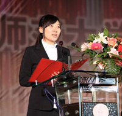

学生会----青春无悔的选择
孙纪瑶，女，中共党员，计算机科学与信息技术学院图书馆学专业2007级本科生。先后担任班级班长、东北师范大学08-09年度班长联谊会会长、传媒科学学院学生会主席、东北师范大学第36届净月校区学生会主席，曾连续三年获得校长奖学金，获宝钢优秀学生奖、“吉林省优秀团员”称号、“长春市文明大学生”称号、连续三年获得“校优秀学生干部”称号、社会工作奖学金、教师技能奖学金、社会实践奖学金、“校优秀女大学生”称号，入选校“优秀学生党
员”四个百人团队。2010年9月，作为在校生代表在净月校区创建十周年庆典上发言。拥有国家大学生创新性试验计划一项，校级科研立项两项，并在省级刊物上发表专业论文一篇。2011年10月，保送至东北师范大学思想政治教育研究中心攻读硕士学位。
由于两年的高考失利，使高中时一向勤奋、踏实的孙纪瑶在性格中又多了一份坚毅和执着。在最终幸运的接到东北师范大学的录取通知书时，她告诉自己“在大学中，一定要做最好的自己，奋斗出不一样的青春，做回那个让父母引以为傲的女儿”。就这样，初入大学的她少了几分好奇与欣喜，很快的投入到了角色之中。和班级许多同学一样，起初对“图书馆学”这个专业并没有太多的情感，而是觉得它是枯燥与乏味的代名词，但是她却不断的告诉自己如果不能“爱一门学一门”，那么就要“学一门爱一门，并且精一门”。就这样开始了对“图书馆学”魅力的探索，四年来永远坐在教室第一排的她，下课总是第一个冲到讲台上去和老师交流；除了上课和学生工作所用的时间外，她把全部余闲都用在了跑到图书馆去解决课上没弄懂的问题、梳理专业课知识上；她始终坚持熄灯以后去自习室学习直到深夜，往往是最后一个离开的人。同学们眼中的她仿佛是一直奋战于图书馆、自习室、学生会办公室，仿佛有着永远用不完的精力。但是只有她自己知道，为了做最好的自己，她每天都高度地集中着精神，放弃了本该有的休闲、娱乐，甚至连休息的时间都被挤了再挤，四年之中几乎每天只睡6个小时。本来体质不好的她更是经常生病，而却总是草草吃过两片药就投入到紧张的学习工作之中，即便是在最疲惫不堪、身体最脆弱的时候，她仍然告诉自己的就是---坚持！就这样，她始终以极为坚定的毅力践行着当初的誓言——“做最好的自己”。非常人一般的付出使她收获了让人欣慰的硕果——连续三年排名专业第二，专业课优秀率95%以上，并在省级刊物上发表专业论文一篇。她从查找一个个科研知识点开始做起，到逐步的积累科研能力，再到独立承担项目，这便是她长久坚持与投入的收获。专业类校级科研立项《古籍保护数字化策略研究》还获得“优秀科研立项小组”称号，此外她还结合自身兴趣以及利用课余时间学习的第二专业中获取到知识，积极投入到其他学科的科研之中，带着维护失地农民权益的社会责任感和客观公正的态度开展以《土地征用政策中的农民参与问题研究---以长春市净月开发区为例》为题的研究，通过长达半年的实地走访调研，切实感受失地农民生活中的疾苦并取得一手数据，经过深入的研究，针对农民参与问题进行了较为全面的分析，提出可行的建议，引起政府以及社会各界的广泛关注，并凭此课题成功的申报了国家大学生创新性实验计划和校级科研立项。
在全面而积极的自我积淀的同时，她也在不断地思考和找寻着蜕变最美人生的方式。如果说每个人实现自身价值的方式都不尽相同，那么对她而言，大学中最有价值的事情就是在学生工作中收获了真正意义上的成长，在为学校、为同学尽她所能的同时也为自己的青春画出最浓墨重彩的一笔。
对她而言，学生会是片成长的沃土。她总说自己的大学四年可以算得上是学生会的四年：这里教会了她如何正确认知自我；如何理性的看待成长中的失去与收获；如何在传承中找寻创新与突破等等。科学统筹、高效运作是她的中心理念和准则，四年间，她时刻告诉着自己“别人学习的时候也许我在忙于活动，那么别人休闲娱乐的时候我一定得是在思考和学习，年轻---苦点累点没什么”。她努力将自己融入到团队之中，以自己独特的方式去带领她的团队去完成老师和同学们赋予她的使命，使每个人在团队之中都能找到自己的价值、收获自身的成长。从院学生会到校学生会，都十分注重对学生干部的培养，长期坚持开展时事讨论、即兴演讲等活动，她总是说，看到副部、干事们的成长远比自己得到任何荣誉都幸福得多。她在不断地突破困难中积累内心的强大，在院学生会主席时，她身体力行的采取一系列行之有效的方案将艺术专业学生灵动的激情和似火的青春与非艺术专业同学内敛的性格和低调的姿态相融合，以切实可行的理念引导学生会借助彼此的优势产生巨大的合力；在当选校学生主席后，从未有过校会经历的她不断地思考如何快速感知组织固有的文化并且被其认同，如何凝聚一批肯吃苦、能战斗并在各有所长的学生骨干，如何在传承中找寻新的发展契机……可以说挑战是巨大的，但是历经跋涉走过之后，她的收获也是巨大的。从过去的懵懂羞涩，到现在站在校庆的舞台上发言时的从容淡定；从过去的只懂蛮干，到现在的高位思考、高端统筹、高效组织等等。在收获脚踏实地的深入细节、打牢基础，拥有扎实的实践技能的同时也收获了总揽大局、拓宽视野，努力追寻长远的理想信念。
对她而言，学生会是一项事业。很多时候同学们做事情靠的是一时兴起或是短暂的高频投入，但是她对待学生会却绝非如此，而是把它看作是一项使自己全情投入、如痴如醉的事业，并早已成为自己生命中一种不可或缺的坚持。为了践行当初校学生会主席竞选时的诺言“要为首届免费师范生的就业提供助力，同时提高非师专业同学的就业竞争力”，她积极组织开展教师技能大赛、职业生涯规划大赛，并配合筹措“东芝杯师范大学教学技能大赛”等活动，使同学们精神获得愉悦的同时，能力也得到了提升。在担任东北师范大学后勤考核评估指导小组和净月校区建设规划委员会的成员时，她一方面积极参与到学校民主化管理，另一方面也积极通过调研的数据分析了解同学所需，并采取有效的措施表达大家的基本利益诉求。她竭尽所能带领学生会去丰富同学们的校园文化氛围，三对三篮球赛、东师首届国际交流日、趣味运动会、“韶光十载 峥嵘净月”大型广场晚会……每一个活动的背后都饱含了太多的艰辛与苦累，但是她不曾倦怠和迟疑。多少次的压力至极、疲惫不堪之时，她都告诉自己“你是校学生会主席，承载着全校老师和同学们的期许，这是光荣的使命，即便是女主席也要有男孩子般的刚毅，不能倒下，站起来！”可以说，她早已把学生会当做是一种事业融入到自己的血液之中，把为大家服务变成了一种浑然自成的天性。
对她而言，学生会是一种情怀。那是一种“以展现东师风采为己任”的使命感；一种苦累交融，却愿为其倾其所有的责任感。她知道，也许现在的自己并没有过高的资历代表母校做些什么，但是每当她走出校园去代表母校组织或参加活动时，都会不自觉地挺起胸膛、全力以赴，因为她知道此刻的自己就该为母校做点什么。也许那只是吉林教育电视台采访过后记者的一句“师大的学生就是不一样”；也许那只是与其他高校主席交流经验过后他们的一句“这个措施很不错，我们也要学习一下”。哪怕有再多的坎坷与艰辛，但是“此处有我”的情怀使她无所畏惧，有时她也会想：自己虽然做了很多，但是却很难说清自己到底有什么事迹，但是现在的她明白了，校园里的脚印、活动中的身影、会议中的总结那就是她的事迹。可以为她的母校、她的同学做点什么，她很骄傲！
现在的她已经结束了自己大学四年的学生会生涯，虽然有太多的不舍和留恋，但是她会将它始终深埋于心底，将学生会所赋予她的成长和信念作为此生前进的不竭动力。做最好的自己，她始终在路上……
由于两年的高考失利，使高中时一向勤奋、踏实的孙纪瑶在性格中又多了一份坚毅和执着。在最终幸运的接到东北师范大学的录取通知书时，她告诉自己“在大学中，一定要做最好的自己，奋斗出不一样的青春，做回那个让父母引以为傲的女儿”。就这样，初入大学的她少了几分好奇与欣喜，很快的投入到了角色之中。和班级许多同学一样，起初对“图书馆学”这个专业并没有太多的情感，而是觉得它是枯燥与乏味的代名词，但是她却不断的告诉自己如果不能“爱一门学一门”，那么就要“学一门爱一门，并且精一门”。就这样开始了对“图书馆学”魅力的探索，四年来永远坐在教室第一排的她，下课总是第一个冲到讲台上去和老师交流；除了上课和学生工作所用的时间外，她把全部余闲都用在了跑到图书馆去解决课上没弄懂的问题、梳理专业课知识上；她始终坚持熄灯以后去自习室学习直到深夜，往往是最后一个离开的人。同学们眼中的她仿佛是一直奋战于图书馆、自习室、学生会办公室，仿佛有着永远用不完的精力。但是只有她自己知道，为了做最好的自己，她每天都高度地集中着精神，放弃了本该有的休闲、娱乐，甚至连休息的时间都被挤了再挤，四年之中几乎每天只睡6个小时。本来体质不好的她更是经常生病，而却总是草草吃过两片药就投入到紧张的学习工作之中，即便是在最疲惫不堪、身体最脆弱的时候，她仍然告诉自己的就是---坚持！就这样，她始终以极为坚定的毅力践行着当初的誓言——“做最好的自己”。非常人一般的付出使她收获了让人欣慰的硕果——连续三年排名专业第二，专业课优秀率95%以上，并在省级刊物上发表专业论文一篇。她从查找一个个科研知识点开始做起，到逐步的积累科研能力，再到独立承担项目，这便是她长久坚持与投入的收获。专业类校级科研立项《古籍保护数字化策略研究》还获得“优秀科研立项小组”称号，此外她还结合自身兴趣以及利用课余时间学习的第二专业中获取到知识，积极投入到其他学科的科研之中，带着维护失地农民权益的社会责任感和客观公正的态度开展以《土地征用政策中的农民参与问题研究---以长春市净月开发区为例》为题的研究，通过长达半年的实地走访调研，切实感受失地农民生活中的疾苦并取得一手数据，经过深入的研究，针对农民参与问题进行了较为全面的分析，提出可行的建议，引起政府以及社会各界的广泛关注，并凭此课题成功的申报了国家大学生创新性实验计划和校级科研立项。
在全面而积极的自我积淀的同时，她也在不断地思考和找寻着蜕变最美人生的方式。如果说每个人实现自身价值的方式都不尽相同，那么对她而言，大学中最有价值的事情就是在学生工作中收获了真正意义上的成长，在为学校、为同学尽她所能的同时也为自己的青春画出最浓墨重彩的一笔。
对她而言，学生会是片成长的沃土。她总说自己的大学四年可以算得上是学生会的四年：这里教会了她如何正确认知自我；如何理性的看待成长中的失去与收获；如何在传承中找寻创新与突破等等。科学统筹、高效运作是她的中心理念和准则，四年间，她时刻告诉着自己“别人学习的时候也许我在忙于活动，那么别人休闲娱乐的时候我一定得是在思考和学习，年轻---苦点累点没什么”。她努力将自己融入到团队之中，以自己独特的方式去带领她的团队去完成老师和同学们赋予她的使命，使每个人在团队之中都能找到自己的价值、收获自身的成长。从院学生会到校学生会，都十分注重对学生干部的培养，长期坚持开展时事讨论、即兴演讲等活动，她总是说，看到副部、干事们的成长远比自己得到任何荣誉都幸福得多。她在不断地突破困难中积累内心的强大，在院学生会主席时，她身体力行的采取一系列行之有效的方案将艺术专业学生灵动的激情和似火的青春与非艺术专业同学内敛的性格和低调的姿态相融合，以切实可行的理念引导学生会借助彼此的优势产生巨大的合力；在当选校学生主席后，从未有过校会经历的她不断地思考如何快速感知组织固有的文化并且被其认同，如何凝聚一批肯吃苦、能战斗并在各有所长的学生骨干，如何在传承中找寻新的发展契机……可以说挑战是巨大的，但是历经跋涉走过之后，她的收获也是巨大的。从过去的懵懂羞涩，到现在站在校庆的舞台上发言时的从容淡定；从过去的只懂蛮干，到现在的高位思考、高端统筹、高效组织等等。在收获脚踏实地的深入细节、打牢基础，拥有扎实的实践技能的同时也收获了总揽大局、拓宽视野，努力追寻长远的理想信念。
对她而言，学生会是一项事业。很多时候同学们做事情靠的是一时兴起或是短暂的高频投入，但是她对待学生会却绝非如此，而是把它看作是一项使自己全情投入、如痴如醉的事业，并早已成为自己生命中一种不可或缺的坚持。为了践行当初校学生会主席竞选时的诺言“要为首届免费师范生的就业提供助力，同时提高非师专业同学的就业竞争力”，她积极组织开展教师技能大赛、职业生涯规划大赛，并配合筹措“东芝杯师范大学教学技能大赛”等活动，使同学们精神获得愉悦的同时，能力也得到了提升。在担任东北师范大学后勤考核评估指导小组和净月校区建设规划委员会的成员时，她一方面积极参与到学校民主化管理，另一方面也积极通过调研的数据分析了解同学所需，并采取有效的措施表达大家的基本利益诉求。她竭尽所能带领学生会去丰富同学们的校园文化氛围，三对三篮球赛、东师首届国际交流日、趣味运动会、“韶光十载 峥嵘净月”大型广场晚会……每一个活动的背后都饱含了太多的艰辛与苦累，但是她不曾倦怠和迟疑。多少次的压力至极、疲惫不堪之时，她都告诉自己“你是校学生会主席，承载着全校老师和同学们的期许，这是光荣的使命，即便是女主席也要有男孩子般的刚毅，不能倒下，站起来！”可以说，她早已把学生会当做是一种事业融入到自己的血液之中，把为大家服务变成了一种浑然自成的天性。
对她而言，学生会是一种情怀。那是一种“以展现东师风采为己任”的使命感；一种苦累交融，却愿为其倾其所有的责任感。她知道，也许现在的自己并没有过高的资历代表母校做些什么，但是每当她走出校园去代表母校组织或参加活动时，都会不自觉地挺起胸膛、全力以赴，因为她知道此刻的自己就该为母校做点什么。也许那只是吉林教育电视台采访过后记者的一句“师大的学生就是不一样”；也许那只是与其他高校主席交流经验过后他们的一句“这个措施很不错，我们也要学习一下”。哪怕有再多的坎坷与艰辛，但是“此处有我”的情怀使她无所畏惧，有时她也会想：自己虽然做了很多，但是却很难说清自己到底有什么事迹，但是现在的她明白了，校园里的脚印、活动中的身影、会议中的总结那就是她的事迹。可以为她的母校、她的同学做点什么，她很骄傲！
现在的她已经结束了自己大学四年的学生会生涯，虽然有太多的不舍和留恋，但是她会将它始终深埋于心底，将学生会所赋予她的成长和信念作为此生前进的不竭动力。做最好的自己，她始终在路上……